Introduction
Ultrakill is a fast-paced retro-style first-person shooter (FPS) video game that combines the high-speed action of classic shooters like Doom, Quake, and Duke Nukem with modern gameplay elements. Developed by Arsi "Hakita" Patala, Ultrakill is known for its relentless, over-the-top combat, stylish pixel art graphics, and a high-energy, heavy metal soundtrack. The game embraces a '90s aesthetic, featuring non-stop shooting, gory battles, and a wide variety of weapons and power-ups to keep players engaged. Ultrakill has gained a dedicated following for its challenging gameplay, level design, and nostalgia-inducing experience, making it a popular title among fans of old-school shooters.
Story
Ultrakill doesn't have an elaborate narrative in the traditional sense. Instead, it takes a more minimalist approach to storytelling, focusing primarily on action and gameplay. The game is set in a retro-futuristic world and follows the adventures of its protagonist, a nameless and relentless anti-hero who is often referred to as the "Hank" by the developer. As you progress through the game, you'll encounter a variety of enemies and bosses while traversing different levels with unique themes. While there isn't a complex, overarching story, Ultrakill does incorporate bits of lore and humor into the game, often through in-game dialogue, character interactions, and level design. It revels in its '90s-inspired campiness and embraces a tongue-in-cheek attitude that contributes to the game's charm. Ultimately, Ultrakill is more about delivering intense, fast-paced combat and capturing the spirit of classic shooters rather than telling a deep, narrative-driven story. It's a game that prioritizes action and gameplay over plot development.
Mechanics
Ultrakill encourages swift and agile movement. Players can run, jump, double-jump, and dash through levels to evade enemy attacks and close in on foes. Arsenal of Weapons: The game offers a diverse array of over-the-top weapons, each with its own unique feel and functionality. You can find shotguns, rifles, rocket launchers, and even melee weapons to dispatch enemies in creative ways. Health and Armor: Players must manage their health and armor resources carefully. Health pickups and armor shards can be collected to sustain your character in intense battles. Ammo Scarcity: Ammo is limited, which adds to the game's challenge. Players need to be efficient in their shooting and scavenge for ammo to keep their weapons firing. Combo System: Ultrakill introduces a combo system where players can chain kills together to earn power-ups and bonuses. Keeping the combo going rewards you with more health, armor, and ammunition. Environmental Hazards: Levels are filled with environmental hazards like lava pits and explosive barrels that can be used to your advantage against enemies. Upgrades and Power-ups: As you progress, you can discover power-ups and collectible upgrades that enhance your character's abilities, such as faster movement, increased damage, and more. Boss Fights: Ultrakill features challenging boss battles that require careful strategy and quick reflexes to defeat. Stylish Aesthetic: The game's pixel art style, vibrant colors, and exaggerated gore contribute to its unique and stylish visual appeal, reminiscent of classic shooters. Speedrunning: Ultrakill is popular among speedrunners due to its fast-paced gameplay. The game encourages players to complete levels as quickly as possible and offers various time-based challenges. Non-linear Levels: Levels in Ultrakill are often non-linear, allowing for exploration and multiple paths to reach your objectives. High Energy Soundtrack: The game's heavy metal soundtrack adds to the adrenaline-pumping action, complementing the overall experience.
Community
Ultrakill had a growing and passionate community of players, modders, and content creators. The game's community primarily revolves around online platforms and forums where players and fans discuss various aspects of the game, share strategies, and create content related to Ultrakill. This community includes Discord servers for discussions and multiplayer matches, a Reddit hub for fan art, gameplay clips, and modding discussions, a robust modding community that enhances the game's replayability, Twitch and YouTube content creators who stream and upload gameplay, a dedicated speedrunning community with specialized categories and leaderboards, engagement between the Ultrakill developer and the community for feedback and suggestions, occasional community-driven tournaments, and creative fan art and cosplay shared online. Please note that the state of the Ultrakill community may have evolved since my last knowledge update in September 2021. It's worth checking the latest online platforms and social media channels to get a current understanding of the game's community and its activities.
Art
Ultrakill is renowned for its distinctive pixel art style, a significant part of its visual identity that contributes to its retro-inspired and over-the-top aesthetic. The art in Ultrakill exhibits several key characteristics: pixel art reminiscent of classic '90s shooters, a vibrant color palette, detailed character designs, over-the-top gore, intricate environmental design, a comic book style, retro-designed UI and HUD, and pixel art cutscenes and animations. This combination of elements makes Ultrakill visually distinctive and appealing to fans of retro and fast-paced shooters, capturing the essence of classic FPS games while infusing it with modern design elements.
 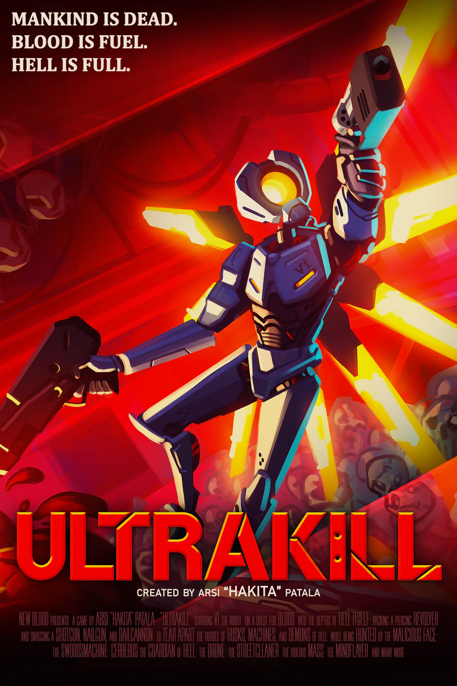
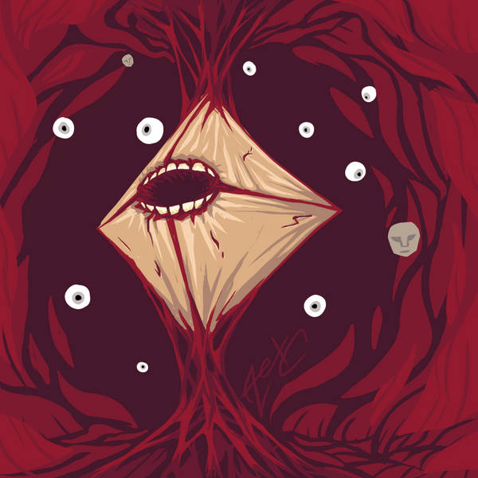
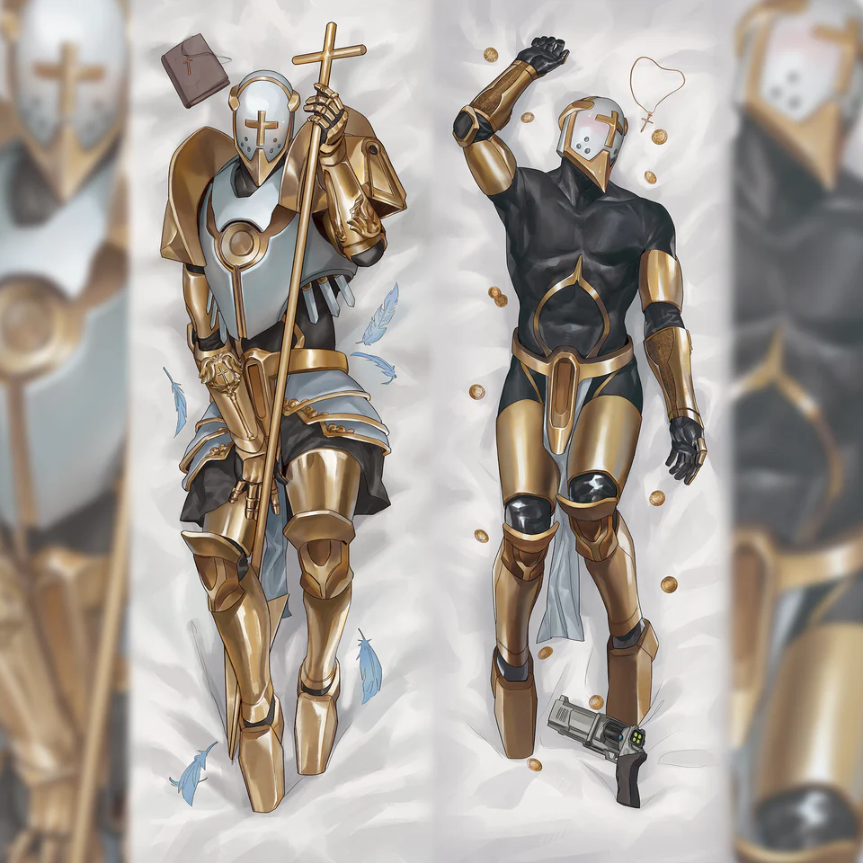
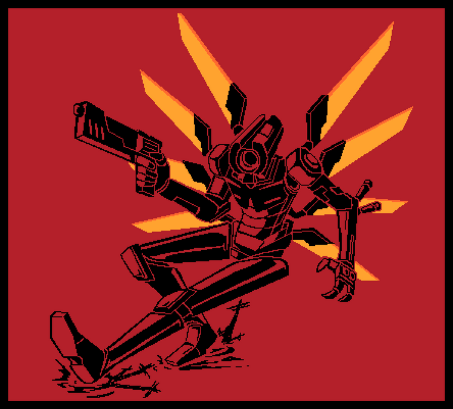
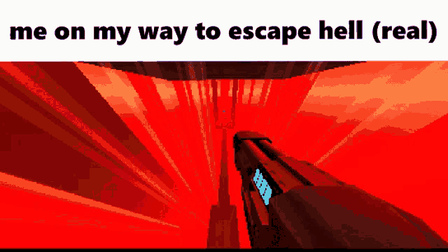
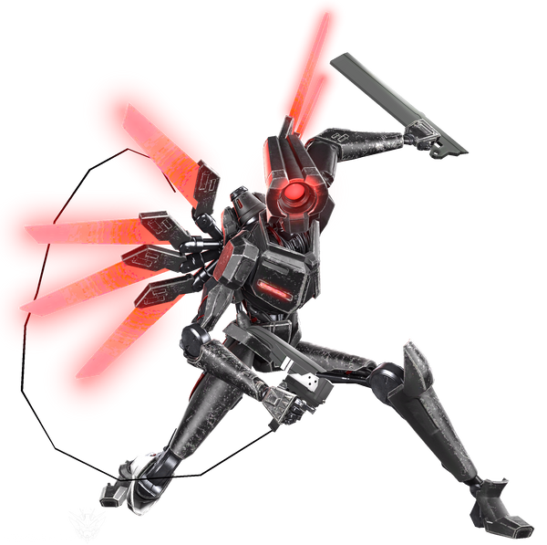
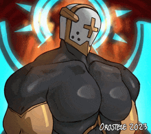
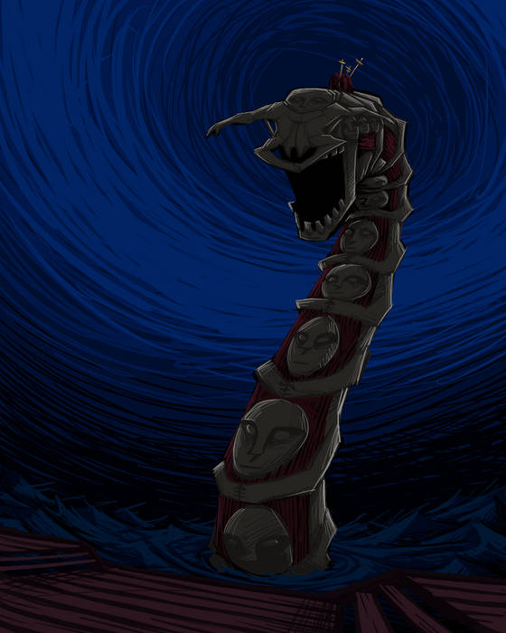
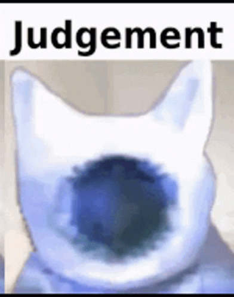
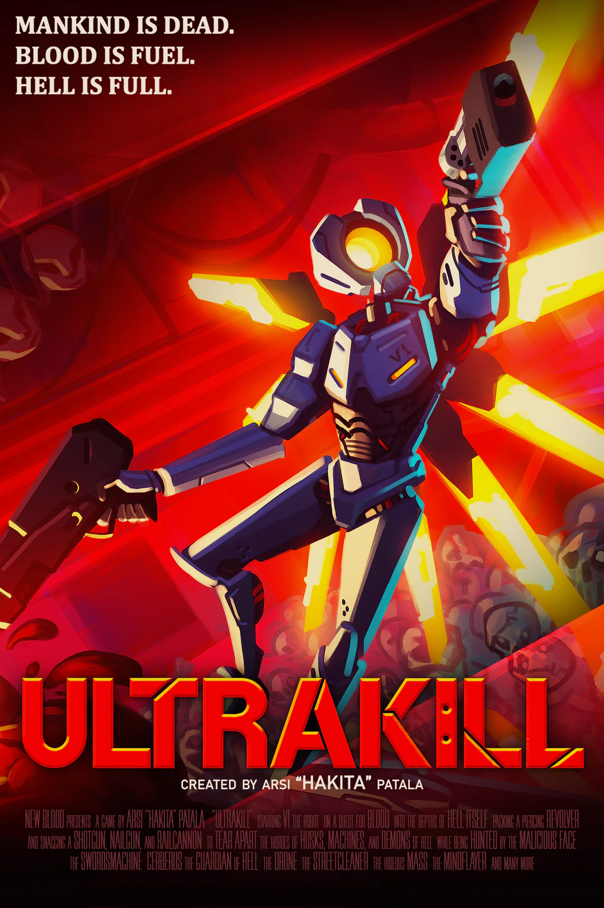
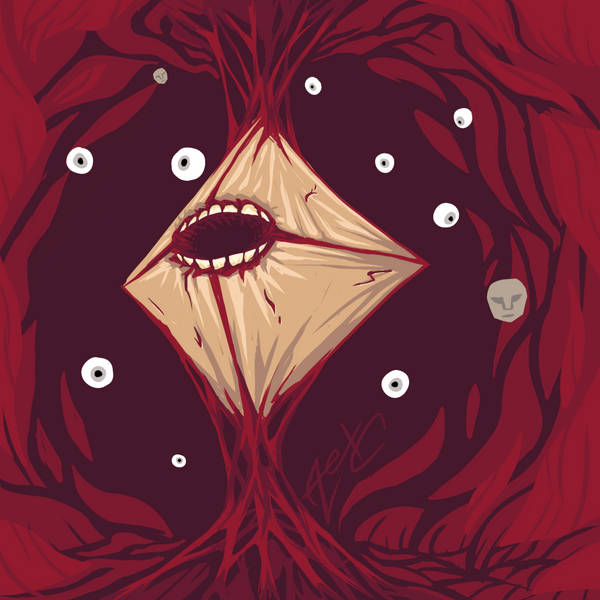
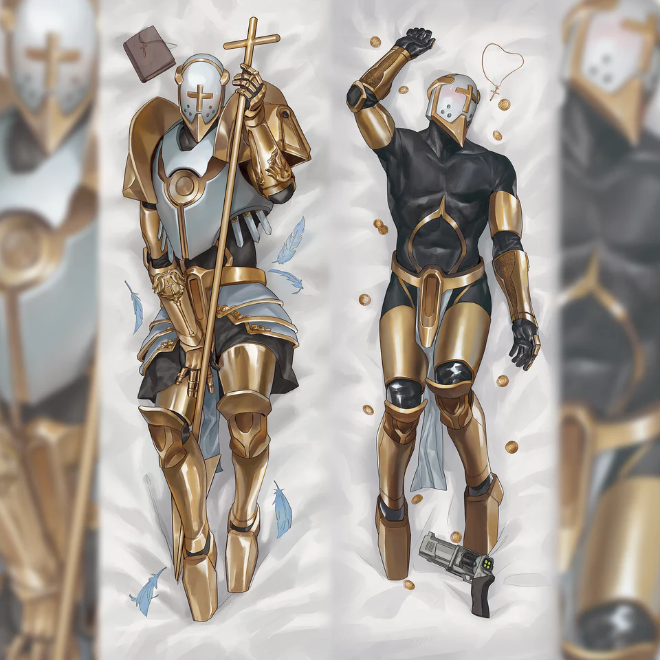
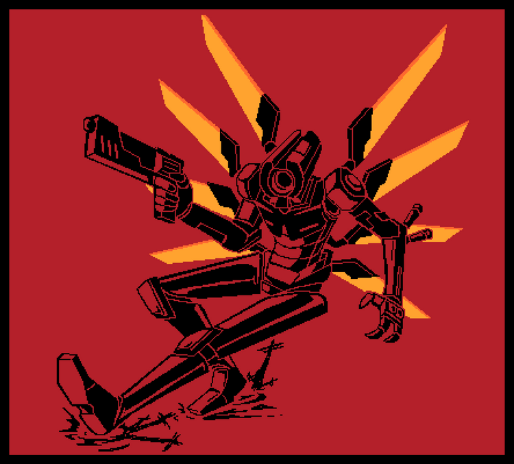
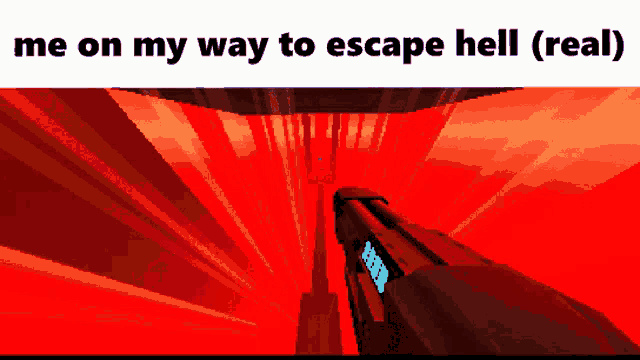
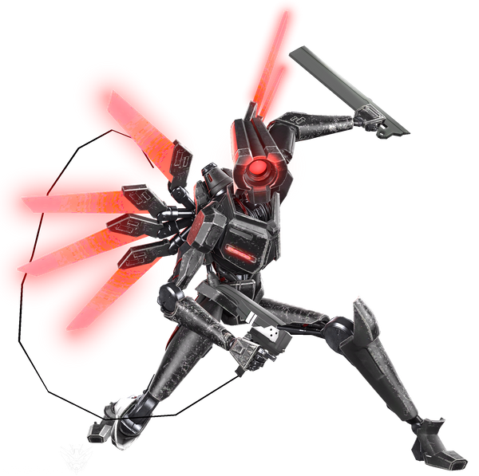
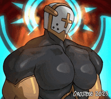
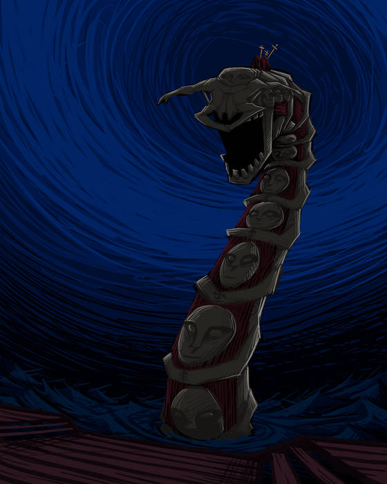
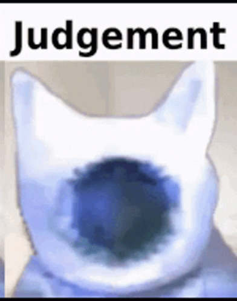